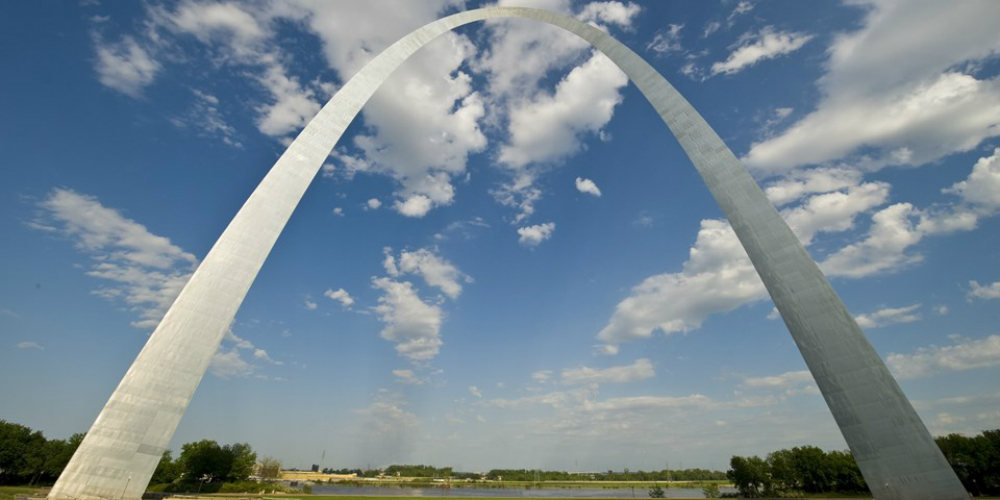

This is you guide to St. Louis. Below you will find information on hot attractions around the city and other bits of information you may find useful.
Our first stop is the St. Louis Science Center. The Science Center is
St. Louis' greatest home of scientific experiences and opportunities.
A community funded locale, the majority of experiences the Science Center
offers are completely free so it serves extremely well as a low-budget
place to get enjoyment and knowledge together! For no money at all, you
can experience numerous educational exhibits, flight simulators and more.
However, if you're willing to let go of a little cash, you can enhance
your experience with a trip to one of the premium seasonal exhibits
center offers or a trip to the Planeterium or Omnimax Theater to enjoy
an entertaining, educational experience.
Next up is one of St. Louis' largest attractions: The St. Louis Zoo.
As one of the best Zoo's in the country, this is not an attraction you
want to miss out on. With an enormous selection of animals in their
simulated natural environments, one could wander the zoo for hours
watching and learning about creatures different from ourselves. The Zoo,
similar to the Science Center, is a publicly funded, and therefore free
to enter, locale. Thus for no money at all you can tour and experience
the countless animal exhibits that are offered. Also similar to th
Science Center, if you're willing to part with some cash you'll get the
opportunity to see special shows and some premium exhibits that may
come around.
Third in our line up is Forest Park. This 1,371 acre park could
certainly be considered the cities largest attraction (in area) and it
also contains many of the cities most popular attractions including the
two mentioned previously. In addition to those two, Forest Park is also
home to interesting locales like The St. Louis Art Museum, The Boat House
and more. It even serves as a location for various major seasonal events
such as fair St. Louis which takes place every July and attracts visitors
even from outside St. Louis to enjoy themselves with various activities
during St. Louis' (often hot) summer. Our final stop is St. Louis' premier attraction: The St. Louis Arch.
This monument got St. Louis it's name as "The Gateway to the West" and
attracts people to the city from far and wide, for good reason too.
Whether you visit to travel up to the top and look over the city
or if you'd rather travel beneath and visit the St. Louis Arch Museum,
there's no avoiding an entertaining experience at the Arch. Even if you
just swing by to look the at the monument, seeing it in person is well
worth it.
Those were four of St. Louis' biggest attractions. Visit any of them you
find interesting, but also remember these are by no means the only attractions
the city has to offer. So do further research to make you St. Louis experience
the best possible. In addition, you can Fill out the form below to sign up
to receive our weekly newletter detailing all the biggest happenings around
St. Louis!
Sample Activities
Map
Schedule
Sunday
Monday
Tuesday
Wednesday
Thursday
Friday
Saturday
11:00am - 4:30pm
9:30am - 4:00pm
9:30am - 4:00pm
9:30am - 4:00pm
9:30am - 4:00pm
9:30am - 4:00pm
9:30am - 4:00pm
The St. Louis Zoo
Schedule
Sunday
Monday
Tuesday
Wednesday
Thursday
Friday
Saturday
9:00am - 5:00pm
9:00am - 5:00pm
9:00am - 5:00pm
9:00am - 5:00pm
9:00am - 5:00pm
9:00am - 5:00pm
9:00am - 5:00pm
Map
Forest Park
Map
The St. Louis Arch

Schedule
Sunday
Monday
Tuesday
Wednesday
Thursday
Friday
Saturday
8:00am - 10:00pm
8:00am - 10:00pm
8:00am - 10:00pm
8:00am - 10:00pm
8:00am - 10:00pm
8:00am - 10:00pm
8:00am - 10:00pm
Map